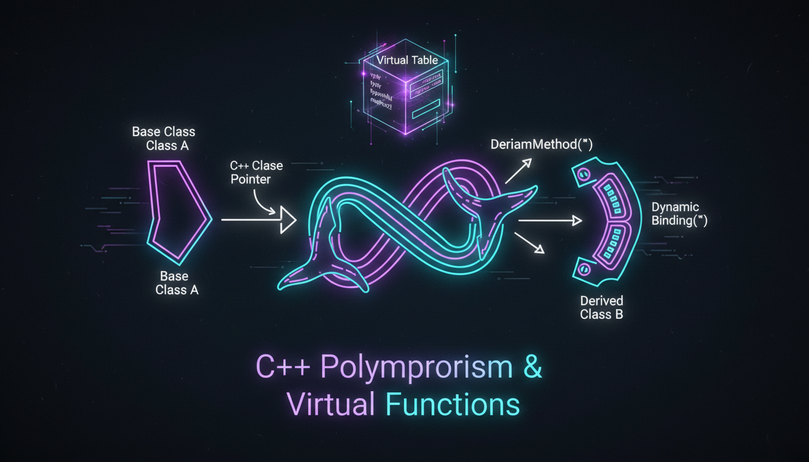

Віртуальні функції, vtable, динамічне зв'язування

Віртуальна функція — це функція, оголошена в базовому класі з ключовим словом virtual, яка може бути перевизначена в похідному класі.
#include <iostream>
class Shape {
public:
virtual double getArea() const { // Віртуальна функція
return 0;
}
virtual void draw() const {
std::cout << "Малюємо фігуру" << std::endl;
}
};
class Circle : public Shape {
private:
double radius;
public:
Circle(double r) : radius(r) {}
double getArea() const override { // Перевизначення
return 3.14159 * radius * radius;
}
void draw() const override {
std::cout << "Малюємо коло з радіусом " << radius << std::endl;
}
};
class Rectangle : public Shape {
private:
double width, height;
public:
Rectangle(double w, double h) : width(w), height(h) {}
double getArea() const override {
return width * height;
}
void draw() const override {
std::cout << "Малюємо прямокутник " << width << "x" << height << std::endl;
}
};
int main() {
// Поліморфізм через вказівники
Shape* shapes[2];
shapes[0] = new Circle(5);
shapes[1] = new Rectangle(4, 6);
for (int i = 0; i < 2; i++) {
shapes[i]->draw();
std::cout << "Площа: " << shapes[i]->getArea() << std::endl;
}
delete shapes[0];
delete shapes[1];
return 0;
}